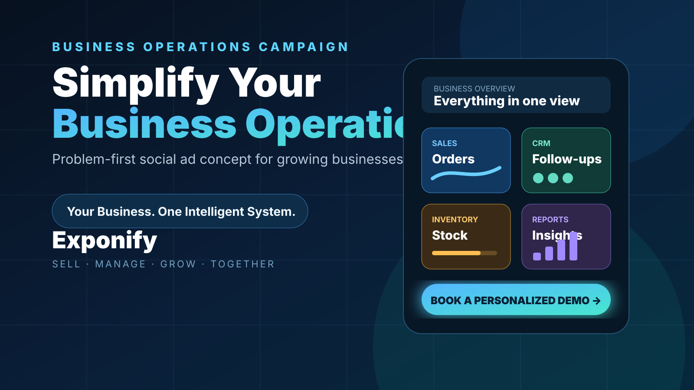

Open with familiar business pain points, then simplify the message around one organized system.
← Back to Multimedia
Spec Work · Campaign Concept
Exponify
Business Operations Campaign
A 36.48-second vertical Meta Ads campaign built around a simple business problem: as operations grow, messages, records, follow-ups, inventory, and reporting become harder to manage. The edit moves from that tension toward a clearer all-in-one system story and a personalized-demo CTA.
Canva
Photoshop
CapCut
Year2026
RoleCampaign Concept
Video Editing
Video Editing
PlatformFacebook & Instagram
GoalPresent a simpler business-system story
Video preview unavailable.
Featured Campaign
Business Operations Meta Ad
The campaign uses a consistent corporate blue/teal visual language to move from business overload into a more organized Sales, CRM, Inventory, and Reports story.

Project Overview
Built around one clear business problem.
Designed for viewers managing customers, orders, stock, reports, and repeated follow-ups.
Presenter-led scenes, UI/product visuals, message overlays, analytics imagery, and final CTA.
Phone-first H.264/AAC MP4 intended for Facebook and Instagram placements.
Creative Process
From business pain point to demo CTA.
Use messages, paperwork, orders, supplier updates, and manual records to establish the problem quickly.
Introduce Exponify after the pain point, then group the system around understandable business modules.
Sequence presenter footage, UI imagery, text overlays, and transitions without overloading each frame.
Keep the last message focused on a personalized demo instead of competing calls to action.